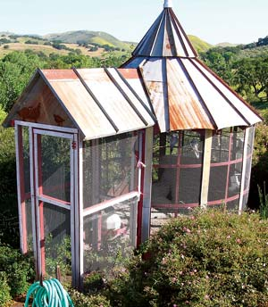
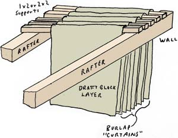
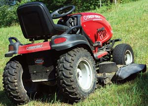
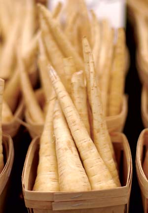

Build a Stylish Aviary
Burlap Bat Boudoir
Right Tires for Rough Ground
Parsnips, a Sweet Root
Free Solar Hot Water
Perfect Ground Cover
Grow Potatoes in Biodegradable Boxes
Edible Theme Gardens
Use Vinegar for Stain-free Diapers
My neighbor had an old feed bin that he wanted to get rid of, so we decided to convert it into an aviary for our cockatiels. The bin originally stood on four legs and was about 16 feet tall. I cut off the legs and then cut off what used to be the top of the bin.
My next step was to invert the bin so that the cut-out top was now the ground end, and the pointed end became the roof. Next, I made a cardboard pattern for the windows. I drew the window pattern on the sides of the bin, then cut it out to leave what looks like window panes. I then covered the cut-out sides with aviary wire.
I covered the roof with old corrugated sheet metal. First I flattened it by repeatedly running over it with my truck on the driveway. Then I cut the sheet metal and bent it to create a standing seam roof.
To keep the birds from escaping, I added a short entryway so there would be two doors. So far we have had no escapes and the birds are healthy and doing well in their unique aviary.
Most people like to have bats around because they provide great bug control, but I just like the bats themselves. I found how to attract bats quite by accident, but the discovery meant I could put old burlap bags and carpet scraps to good use.
I had a habit of storing old rugs and burlap sacks by hanging them over the rafters in my small barn and carport. It wasn’t until much later, when I decided to move this stuff, that I saw there were bats roosting in between the layers. Then I remembered an article I had read somewhere that described how to make a similar type of low-cost bat home.
I used materials I already had, simply laying sections of 1-by-2-inch and 2-by-2-inch lumber onto adjacent rafters, and draping open burlap bags or carpet scraps over them to create a series of curtains.
I have found that hanging the material side by side from one end of the rafters works best. The outer-most curtain should be canvas, carpet or anything else that can block drafts. The bats just need materials they can crawl on and cling to; six to 12 layers works well. Using only burlap bags doesn’t offer the bats enough insulation. The bags are kind of porous and drafty, so the heavier outer-layer material offers extra protection.
Location is important. You want these curtains to be attached to the rafters inside the building so they’re well protected from the rain. They should be close to or against a south or southwest wall, because that’s where the roof will be most warmed by the sun. Also, put them in buildings with high rafters so the bats are not disturbed while you’re working inside.
This method turned out to be more efficient than just hanging the stuff over the rafters because there’s more space for the bats to get into. It’s like replacing a single family dwelling with an apartment building, and it really works.
I think my method is probably the cheapest and most successful way to make a permanent bat house. It also recycles materials that would otherwise go to the dump or burn pile. One word of caution though: Don’t store anything important underneath the bat house - bats have sticky droppings (which do make good fertilizer).
Five years ago I retired from Florida and moved to the back woods of Waynesboro, Tenn. My first riding mower spun out on curves and stuck in small holes. This was disappointing until my son, who owns an ATV store, suggested putting wide knobby tires on the front and tractor tread 1 inch higher on the rear. This change was a revelation! I drove that mower for two years and then passed it on to my son, whose three acres were rougher than mine.
If you mow on rough, hilly ground and need better traction, check with your mower’s dealer about the best tires for your brand of mower.
Parsnips are a versatile vegetable to use in soups, stews and as an accompaniment to pork, beef or chicken. Plant the seeds in spring in loose soil that has been deeply dug. Adding compost or aged cow manure to the soil will help the parsnips grow long and straight.
The seeds are slow to germinate; it might take two or three weeks. Sow a few radish seeds in the parsnip seed row to indicate where the tardy parsnip seeds have been planted. Another way to mark the row and encourage germination is to put a board over the row where the seeds are planted. It will help keep the soil moist. Check each day and remove the board as soon as you see the little sprouts.
The long, pale roots may be pulled at the end of the summer, but if you leave them in the ground until the following spring, you’ll be rewarded with sweeter roots.
I live in a very sunny spot of the globe where a simple solar collector heats my water. On top of the house I have a 100 meter roll of flexible, black half-inch pipe. This is hooked up to the water reservoir, which is higher than the roof. The water flows down the black pipe and into a conventional water heater that is not turned on. The sun heats the water and the insulated tank keeps it hot all night. We have free heat for the water 99 percent of the year. The whole setup cost me about $50 eight years ago and should last another two years.
Most hot water is not used for drinking or cooking. But if you try this project, and you intend to drink or cook with the water, be sure that you use a black plastic that is rated safe for potable water. To read more about do-it-yourself solar water heaters, go towww.MotherEarthNews.comand search the Archive for “solar water heaters.”- Mother
I have a dog yard where grass doesn’t grow well because it is a shady, damp location under large trees. Last winter I raked up the area, then sowed crimson red clover seed for a ground cover. It works wonderfully! My dog just loves to go in there and eat the clover, and I get a nice green area to admire.
The Irish potatoes that I grew in raised beds were healthy and stored well, but building a raised bed can be costly and requires hard work. I wanted an alternative that was easy to build, inexpensive, useful and attractive. My company recycles hundreds of cardboard boxes, many of which are the same shape and size. Last spring, I collected several boxes, lined them up in the garden and planted potatoes in the bottom third of the box using a light soil mixed with mild organic fertilizer. As the potatoes grew, I added more soil. The potatoes grew beautifully. I planted herbs and flowers around the boxes, and it looked so good that my neighbor is going to add some to her garden.
The boxes were free, attractive and will biodegrade at the end of the season. Plus, new ones can be set up next year in a different part of the vegetable garden to help rotate the crops. The top flaps can be closed to protect the tender plants from a late frost. It is easy to build up soil around the growing potatoes; harvesting is also easy. You can either reach in for new potatoes, or peel the biodegraded sides away at the end of the season.
Many of my gardens have themes. I try to grow things together that I combine for cooking. It’s easy and the gardens make great conversation pieces.
A salsa garden: My salsa plot consists of tomatoes, sweet and hot peppers, onions, tomatillos, celery, cilantro and dill. All these plants grow as well together as they taste together.
A garnish garden: Many herbs can be used as garnishes, but this patch is for plants that I use only for garnishes when serving meals - parsley; pansies; chives; cherry tomatoes; ground cherries; nasturtiums; and pineapple mints, chocolate mints and peppermints.
A snack garden: Homegrown snacks are more nutritious than commercial, packaged ones. The garden changes from year to year, but can include popcorn, strawberries, peanuts, sunflowers for their seeds and a potato plant or two for homemade chips.
An ethnic garden: I usually plant a garden for the ingredients used in Italian cooking. You could do the same for other regional specialty vegetables, such as Greek, Mexican or Thai. In my Italian garden I plant eggplant, basil, oregano, garlic, thyme, rosemary and slicing and paste tomatoes.
An edible flower garden: There are many different kinds of edible flowers, from sweet to peppery tasting. Here are just a few:
Both my little ones are in cloth diapers, and I’ve found vinegar to be very effective in removing stains and odors. I add the vinegar to the rinse cycle (fabric softener compartment), and it also washes out the detergent better, preventing diaper rash and making the cloth softer. My 5-month old is wearing stain-free diapers that I made for his big sister. It works on the rest of the laundry, too (but not on dark colors because it can cause them to run).
SHARE YOUR WISDOM!Have you learned some trick of the trade, secret formula or way to work more sustainably around the homestead? We’ll pay you $25 to $50 for each letter we publish. Send info, with photos please, to “Country Lore” at Mother Earth News; 1503 SW 42nd St.; Topeka, KS 66609, or to letters@MotherEarthNews.com. |
|
 RONALD ZIEGLER This stylish aviary is made from a recycled feed bin. |
 MICHAEL J. SPADONI Inexpensive burlap bags make a great home for bats. Besides being superb bug-hunters, their droppings make great fertilizer. |
 MAYNARD M. MITCHELL riding lawn mowers can be outfitted with better tires for rough ground. |
|
 ISTOCKPHOTO/GRAEME GILMOUR Parsnips are delicious and easy to grow organically. |
|
|